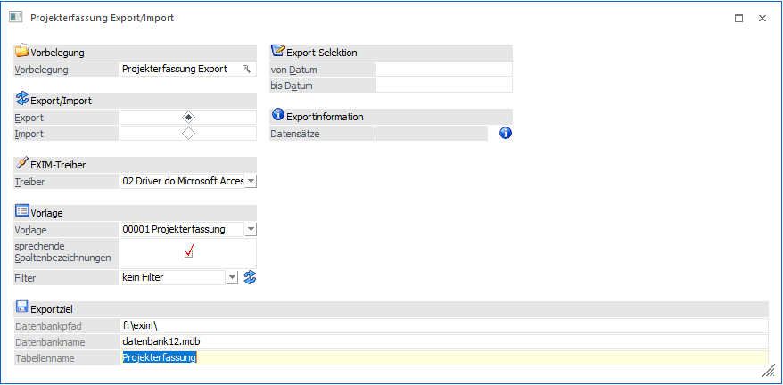
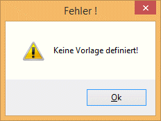
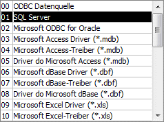
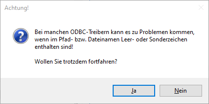
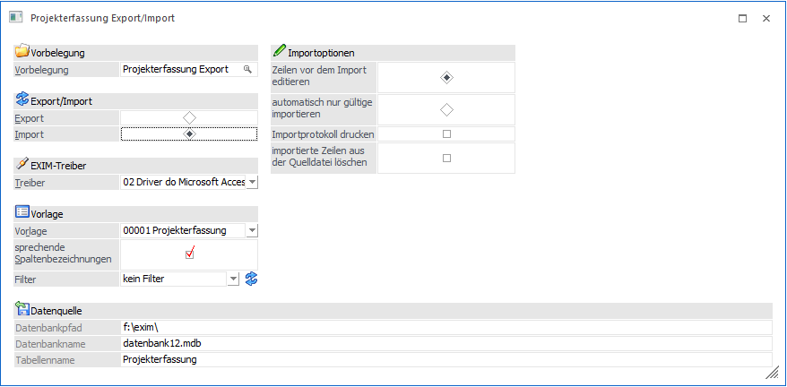
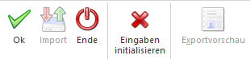
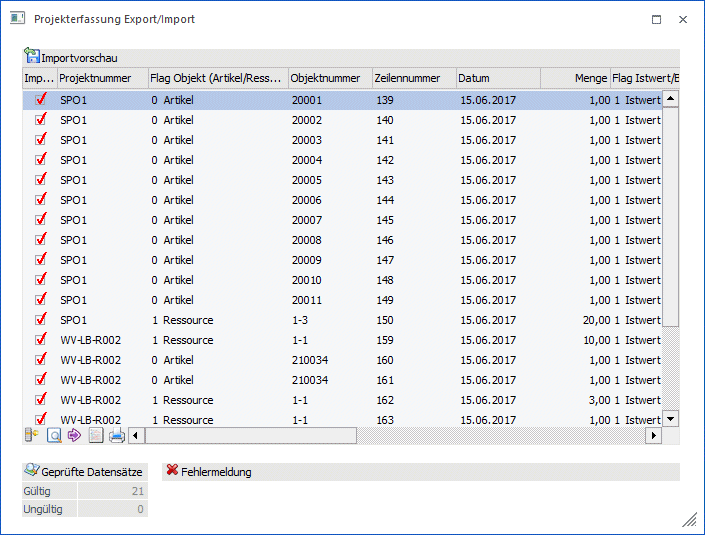
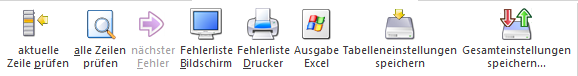

Der Projekterfassung Export / Import dient dazu, Erfassungszeilen von einem Projekt zu exportieren, oder neue Erfassungszeilen zu einem Projekt zu Importieren. Der Aufruf der Projekterfassung Export / Import Möglichkeit erfolgt über den Menüpunkt…
1 WinLine FAKT
1 Erfassen
1 Projektverwaltung
1 Projekterfassung Export/Import

Hinweis
Voraussetzung dafür, dass ein Export/Import durchgeführt werden kann, ist das Vorhandensein einer entsprechenden Vorlage. Vorlagen für den Projekterfassung Export/Import werden im Programm WinLine START über den Menüpunkt Vorlagen/Vorlagen Anlage angelegt. Wenn keine entsprechende Vorlage vorhanden ist, wird dies durch eine Meldung bei der Auswahl des Menüpunktes angezeigt:

Wenn eine Vorlage vorhanden ist, können folgende Felder bearbeitet werden:
Ø Vorbelegung
Über die Vorbelegung kann ein Ex- oder Importvorgang gespeichert werden. Dabei werden alle vorgenommenen Einstellungen gesichert. Diese können jederzeit wieder verwendet werden. Wurde bereits eine Vorbelegung definiert, dann kann diese durch Drücken der F9-Taste gesucht werden. Wurde noch keine Vorbelegung definiert, dann kann diese durch Eingabe im Feld "Vorbelegung" neu angelegt werden. Wurden alle Eingaben durchgeführt, wird die Vorbelegung durch Drücken der F5-Taste gespeichert.
Ø Export/Import
Hier wird entschieden, ob Daten importiert oder exportiert werden sollen.
Export von Projekterfassungsdaten aus der WinLine
Ø Treiber
Hier kann auswählt werden, welches Datenformat beim Export erzeugt werden soll. Für den Treibertyp "ODBC-Treiber" stehen alle ODBC-Treiber zur Auswahl, die im System installiert sind, z.B.:

Je nachdem, welcher Treiber gewählt wurde, wird die weitere Eingabe des Zielpfades und des Namens der Ausgabedatei bzw. Tabelle oder Datenbank gestaltet (Bereich Exportziel).
Beispiel
Wird das Format "MS-Access Treiber (MDB)" gewählt, erfolgt die Aufforderung, den Pfad, den Datenbanknamen, sowie den Namen der Tabelle anzugeben, in welcher die Datensätze ausgegeben werden sollen. Wird z.B. das Format MS-SQL-Server gewählt, so muss der SQL-Servername, sowie der Datenbank- und Tabellenname eingetragen werden, etc. .
Wird beim Export eine bereits bestehende Ausgabedatei bzw. -tabelle angesprochen, so werden neue Datensätze angehängt und identische Datensätze (d.h. z.B. dasselbe Kundenkonto, das schon einmal exportiert worden ist) überschrieben.
Hinweis
Je nachdem, welche ODBC-Treiber verwendet werden, bzw. welche ODBC-Treiber-Version verwendet wird, kann es zu ungewünschten Verhalten des Export/Imports kommen, wenn Sonderzeichen im Ziel- Verzeichnisnamen oder im Datenbanknamen vorkommen. Aus diesem Grund wird - wenn solche Sonderzeichen verwendet werden - eine entsprechende Warnmeldung ausgegeben:

Um sicherzustellen, dass Notizfelder in voller Länge exportiert werden, muss je nach verwendetem Treiber (Access- oder SQL-Treiber) der erste auswählbare Treiber aus der Auswahllistbox verwendet werden. D.h. ist die Auswahlmöglichkeit an Treibern der Reihenfolge nach z.B. "02 Microsoft Access Driver (*.mdb)", "10 Microsoft Access Treiber (*.mdb)" und "16 Driver do Microsoft Access (*.mdb)", dann müsste in diesem Fall "02 Microsoft Access Driver (*.mdb)" selektiert werden. Andernfalls wird das Notizfeld nur mit 255 Zeichen exportiert.
Vorlage
Ø Vorlage
Eingabe der Vorlage, die für den Export/Import verwendet werden soll.
Ø Filter
Durch Auswahl eines Filters aus der Auswahllistbox (hier werden alle bereits angelegten Filter für den ausgewählten Stammdatentyp angezeigt) kann die Ausgabe der Datensätze auf bestimmte Datensätze beschränkt werden (z.B. nur auf Kundendaten einer bestimmten Kundengruppe, nur auf Kunden eines bestimmten Postleitzahlengebietes, nur auf Artikel einer bestimmten Artikelgruppe, etc.).
Die Anlage der Filter erfolgt durch Anklicken des Filter-Buttons, der sich neben dem Eingabefeld befindet - damit öffnet sich der Filter-Assistent, der durch die Anlage eines Filters führt. Wird ein neuer Filter angelegt, dann wird dieser automatisch in das Eingabefenster gestellt und kann natürlich durch einen anderen (bzw. keinen Filter) aus der Auswahllistbox ersetzt werden.
Ø Sprechende Spaltenbezeichnung
Die Exportdatei bzw. Tabelle erhält jeweils die Spaltenbezeichnung, die auch in der Vorlage definiert wurde. Beim Import muss darauf geachtet werden, dass die erste Spalte (dort wird der Key (z.B. Konto- oder Artikelnummer) gespeichert) der Bezeichnung in der Vorlage entspricht.
Abhängig davon, ob Daten exportiert oder importiert werden, können noch unterschiedliche Felder bearbeitet werden bzw. Voreinstellungen getroffen werden:
Export-Selektion
Ø von Datum - bis Datum
In diesen Feldern kann ein Datumsbereich eingetragen werden, für den der Export von Projekterfassungs-zeilen durchgeführt werden soll.
Exportinformationen
Ø Datensätze
Durch Anklicken des Info-Buttons wird ermittelt, wie viele Datensätze anhand der vorhandenen Einstellungen exportiert werden würden.
Import von Projekterfassungs-Daten in die WinLine

Beim Import kann gewählt werden, wie sich das Programm verhalten soll, wobei es zwei Unterscheidungen gibt:
ü Zeilen vor dem Import editieren
ü Automatisch nur gültige importieren
Ø Zeilen vor dem Import editieren:
Wird diese Option aktiviert, können sämtliche Datensätze VOR dem endgültigen Einlesen in die WinLine Datenbank in einer Bearbeitungstabelle editiert bzw. kontrolliert werden. Über die Selektion innerhalb der Spalte "Import" kann optional die Ab- und Anwahl bestimmter Datensätze erfolgen.
Ø Automatisch nur gültige:
Ist die Option "automatisch nur gültige" aktiviert, werden die Datensätze sofort importiert, ohne dass die Daten zuvor in einer Bearbeitungstabelle zur Bearbeitung freigegeben werden. Die Daten werden beim Import automatisch nach den Gültigkeitsrichtlinien der WinLine geprüft. Alle gültigen Datensätze werden sofort importiert. Für fehlerhafte Datensätze gibt die WinLine automatisch ein Fehlerprotokoll aus. In Folge wird die Möglichkeit geboten, fehlerhafte Datensätze in einer Bearbeitungstabelle zu korrigieren (siehe "Sätze vor Import editieren").
Nach Korrektur der Datensätze können auch diese sofort importiert werden (Ribbonbutton "Import").
Ø Importprotokoll drucken
Wenn diese Option aktiviert ist, dann wird mit dem Import auch ein Importprotokoll gedruckt.
Ø Importierte Daten aus der Quelldatei löschen
Ist diese Option aktiviert, dann werden die bereits importierten Datensätze aus der Datenquelle gelöscht.
Buttons

Ø OK
Durch Anklicken des OK-Buttons wird der Export bzw. Import durchgeführt. Beim Import werden - abhängig von der Einstellung, ob die Daten noch editiert werden sollen - noch alle Datensätze in einer Tabelle angezeigt. Dabei stehen folgende Funktionen stehen zur Verfügung:

Abbildung: Beispiel einer Importvorschau.
Ø Import
Das Drücken des Buttons "Import" startet das Einlesen der Datensätze in die WinLine Datenbank. Gleichzeitig mit dem Import findet auch eine Prüfung der Datensätze statt.
Ø Geprüfte Datensätze (Importvorschau)
Hier zeigt das Programm nach Einlesen der Datensätze an, wie viele Datensätze gültig (fehlerfrei) und wie viele Datensätze ungültig sind.
Hinweis:
Bei der Prüfung der importierten Werte ist im Feld "Mitarbeiter" jetzt sowohl eine Arbeitnehmer-, als auch eine Mitarbeiter-Nummer ein gültiger Wert.
Ø Fehlermeldung (Importvorschau)
Wenn in der Importdatei Fehler enthalten sind (z.B. ungültige Artikelnummer oder dergleichen) wird hier die entsprechende Fehlermeldung angezeigt.
Ungültige Datensätze werden für den Importlauf automatisch deaktiviert, d.h. das Häkchen in der Spalte "Import" wird entfernt.
Nach erfolgtem Import gibt das Programm eine Meldung aus, wie viele Datensätze importiert wurden und wie viele Datensätze als "fehlerhaft" deklariert worden sind. Werden ungültige Datensätze gefunden, können diese Datensätze in einem Bearbeitungsfenster anzeigen werden, um den Fehler zu beheben und die editierten korrigierten Datensätze ebenfalls zu importieren.
Ø ENDE
Durch Drücken der ESC-Taste wird das Fenster geschlossen, alle Einstellungen gehen verloren.
Ø Exportvorschau
Durch Drücken des Exportvorschau-Buttons, zeigt das Programm die Datensätze, die auf Grund der vorgenommenen Einstellungen exportiert werden würden.
Ø Zurück
Durch Anklicken des Zurück-Buttons können die Einstellungen zum Import nochmals verändert werden.
Ø Eingaben initialisieren
Durch Anklicken dieses Buttons werden alle getätigten Einstellungen verworfen. Es kann eine neue Selektion durchgeführt werden.
Tabellenbuttons

Ø Aktuelle Zeile prüfen
Wird die Option "aktuelle Zeile aktiviert, prüft das Programm nur mehr die Zeile, in der sich gerade der Cursor befindet (d.h. die Zeile, die Sie gerade bearbeitet haben), was natürlich den Zeitfaktor beim Prüflauf erheblich senkt.
Ø Alle Zeilen prüfen
Wurden Datensätze editiert (verändert), können diese Importdaten durch Drücken des Buttons "Alle Zeilen prüfen" vom Programm nochmals geprüft werden.
Ø nächster Fehler
Durch Anklicken des Buttons "nächster Fehler" springt der Cursor automatisch in den ersten fehlerhaften Datensatz. Durch nochmaliges Anklicken findet das Programm automatisch den nächsten fehlerhaften Datensatz und stellt den Cursor in die entsprechende Zeile, usw. Sind alle Fehler in den zu importierenden Datensätzen bereinigt, ist der Button nicht mehr anwählbar und "Inaktiv" dargestellt.
Ø Fehlerliste Bildschirm/Drucker
Nach Drücken des Buttons "Fehlerliste Bildschirm" bzw. "Fehlerliste Drucker" gibt das Programm eine Liste aller fehlerhaften Datensätze aus und meldet, welche Datenfelder in dem jeweiligen Datensatz fehlerhaft sind, und aus welchem Grund.
Ø Ausgabe Excel
Durch Anwahl des Buttons "Ausgabe Excel" wird der Inhalt der Tabelle nach Microsoft Excel übergeben.
Ø Tabelleneinstellungen speichern
Die Spalten einer Tabelle können grundsätzlich an beliebige Positionen verschoben, bzw. in der Breite entsprechend angepasst werden. Durch Anwahl des Buttons "Tabelleneinstellungen speichern" werden die Einstellungen benutzerspezifisch gespeichert und bei dem nächsten Aufruf des Programmpunktes wieder vorgeschlagen.
Ø Gesamteinstellungen speichern
Im Gegensatz zu "Tabelleneinstellungen speichern" können mit "Gesamteinstellungen speichern" mehrere Tabellenaufbauten gespeichert und nach Wunsch geladen werden.